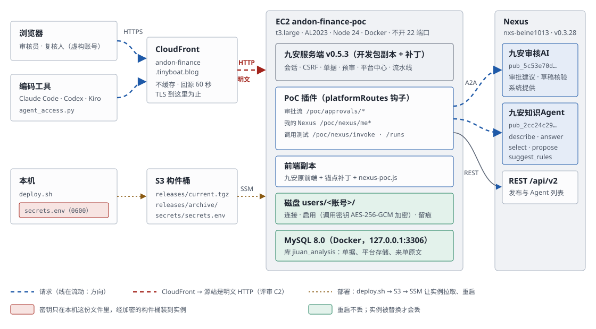

Finance-Audit-Nexus-PoC v0.1（2026-10-19 封板）。现在的状态：
- PoC 第一期已上线：审批流、「我的 Nexus」、调用测试、命令行。
- 测试台已升级：t3.large；本机 MySQL 8.0；服务端跑的是九安开发包的副本和九安自己的运行时。端到端测试 15 通过、0 失败、1 按设计跳过。
- Agent
接入框架（
jiuan.agent/v1）是设计稿 v2，待批准；契约文件已写好。九安补丁 0001–0006 是下一份计划。 - 应用自己的 Skill
agent-access可以装进 Claude Code、Codex、Kiro CLI 了；和 nexus-ai-operator 怎么一起配，见 Skills 配置指南。
先读交付包指南：包里有什么、怎么校验、谁先读什么、怎么验收。这里是交付用的全部文档；每份都有 Markdown（源）和 HTML（生成）两个版本，HTML 用浏览器直接打开。
| 文档 | 回答什么 | 先读给谁 |
|---|---|---|
| 客户部署路线 | 从 v0.1 到九安上线：从哪里入手、要部署哪三块、分五个阶段怎么走、第一周做什么、要九安提供什么、风险 | 项目负责人、九安团队 |
| 交付包指南 | 交付包里有什么、怎么生成和校验、按角色从哪读起、验收清单、签收 | 所有人，第一份 |
| Skills 配置指南 | 编码工具（Claude Code、Codex、Kiro CLI）里怎么装、怎么连两个 Skill：Nexus 一侧的 nexus-ai-operator，应用一侧的 agent-access；配置顺序、排障、安全底线 | Agent 开发、应用开发 |
| 交接文档 | 有哪些东西、在哪、谁负责、还有什么没做完、接手第一周做什么 | 所有人 |
| 架构、模块与工作流 | 线上跑着的样子、每个模块做什么、几条调用链 | 应用开发、Agent 开发 |
| 以补丁和独立模块的形式并入九安 | 怎么把 PoC 的能力交付进九安原应用：补丁、独立模块，以及推荐的组合 | 应用开发、九安团队 |
| 部署与迭代规范 | 每类变更怎么改、怎么测、怎么发布、怎么回滚 | 应用开发、运维 |
| 运维与后续迭代 | 日常操作手册、故障排查、迭代的最佳方式 | 运维、值班 |
| 开发进度看板 | 每个能力、模块、任务的进度、依赖和测试证据，色块表示（快照）；实时版：node tools/ |
所有开发者 |
| Agent 接入框架总览（HTML） | 一页看全：各类 Agent 走同一套接口的动画、两层、三类 Agent、分界、对接流程、信封、第一个任务、可点的状态图、交付接口、维护分工 | 所有人，先看这一页 |
| Agent 接入框架：架构、工作流与交付接口 | 九安平台上各类 Agent（业务流程、财务、知识库）怎么经 A2A 接进来：架构、三类 Agent 怎么接、AI 步骤与审批流、七个交付接口、补丁分层、谁维护什么（设计稿，待批准） | 九安开发者、应用开发、项目负责人 |
| Agent 接口：jiuan.agent/v1 | 所有 Agent
共用的接口：信封、发现、调用、状态、错误码、限制、版本、怎么写新任务；机器可读文件在
contract/ |
九安开发者、Agent 开发 |
| 任务契约：单据初审 first_review@1 | 第一个任务：输入、输出（通过 / 不通过 + 备注）、检查、在审批流里怎么用 | 九安开发者、Agent 开发 |
| 前端到 A2A Agent：调用链、解耦与处理流程 | 九安原前端经哪些接口调到我们的 A2A Agent；九安和 Agent 模块之间的 6 个接缝、哪边变了坏在哪；从汇联易到人工复核的处理流程；汇联易测试环境里有什么 | 应用开发、Agent 开发、九安团队 |
| 客户规则与 AI 初审 | 客户在规则库录入的规则怎么进入 AI 初审：现状、缺口、方案与分期 | 项目负责人、应用开发、九安团队 |
| 交付前代码评审 | 评审结论、上生产前必须改的、维护热点 | 应用开发、项目负责人 |
设计依据：Agent
接入框架设计、测试台升级计划（执行记录在
evidence/bench/2026-10-19-upgrade.md）、Agent
注册与发现设计、Agent 接入
Skills 设计、开发者工作流、机制讲解。
更新文档
- 改 Markdown（
docs/**/*.md）。 - 运行
docs/build-html.sh，生成同名的 HTML。 - 推送前运行
docs/build-html.sh --check，确认 HTML 都是最新的。
新增交付文档时，把它加进 docs/build-html.sh
里的清单。文档之间的链接写成 .md，生成 HTML 时会自动换成
.html。